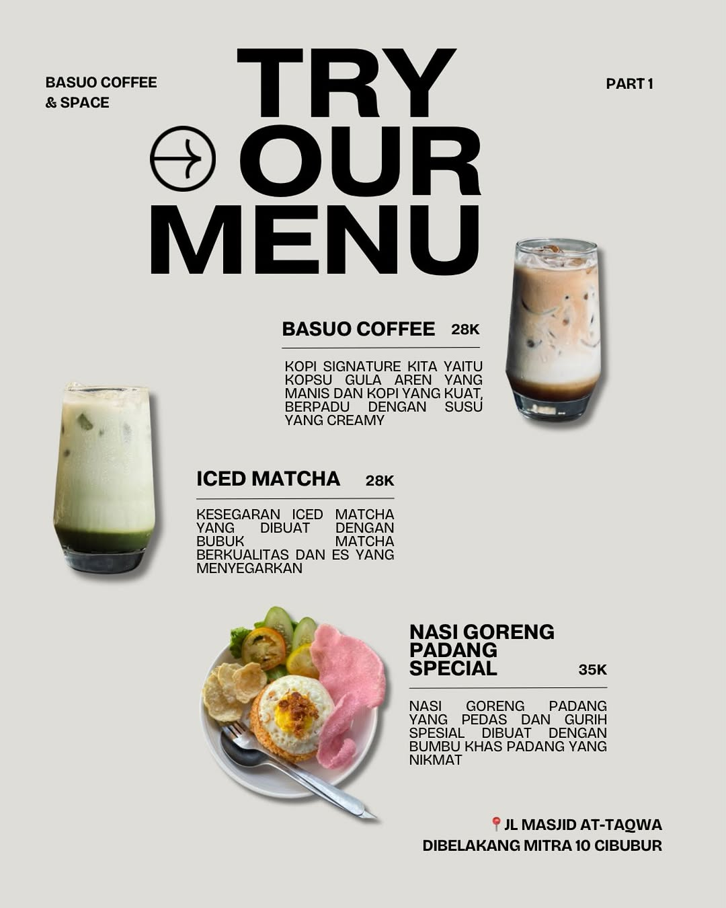
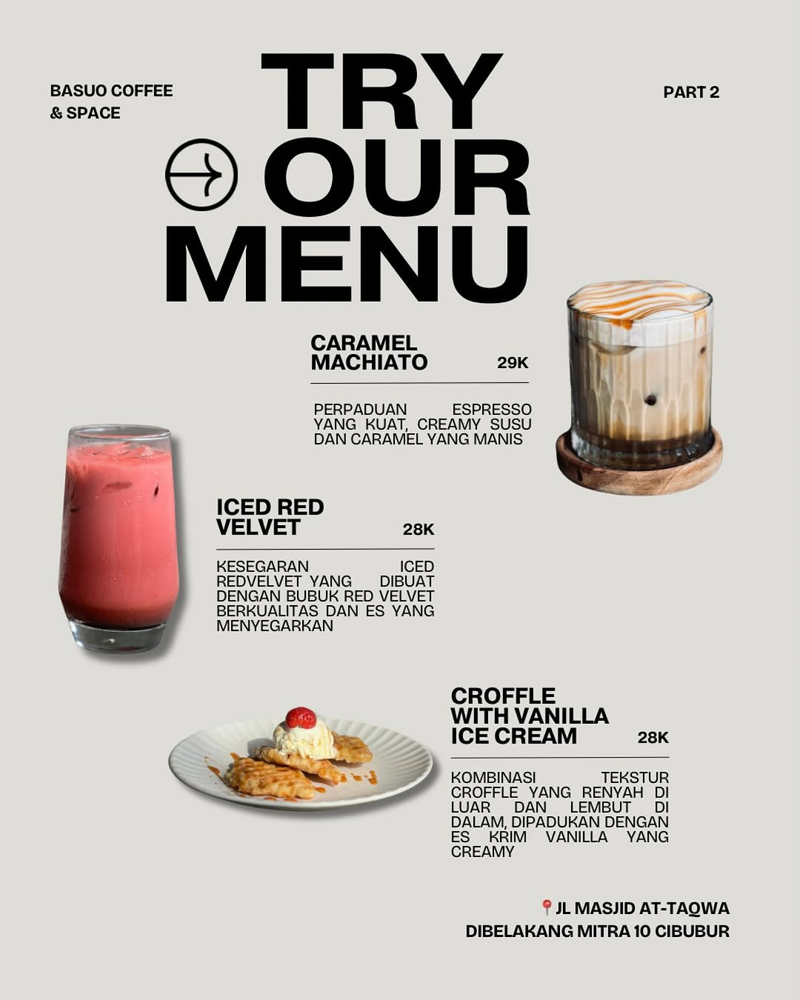
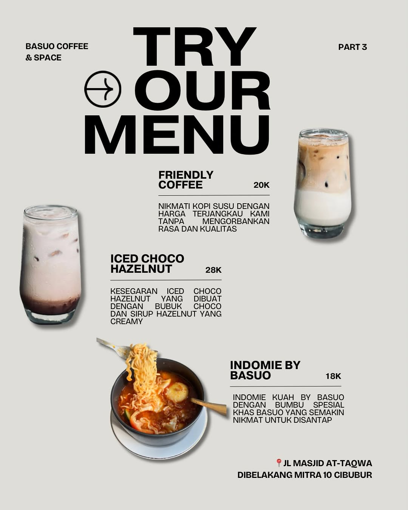

Signature Foods



Beef Teriyaki
Irisan daging sapi pilihan dimasak dengan saus teriyaki khas yang manis gurih, meresap hingga ke setiap seratnya. Disajikan hangat dengan taburan wijen dan aroma bawang putih yang menggoda, menu ini membawa kehangatan seperti pelukan terakhir sebelum sebuah perpisahan. Cocok untuk kamu yang ingin menikmati hidangan penuh rasa sambil menata ulang cerita yang pernah ada.
Croffle with Ice Cream
Perpaduan croissant dan waffle yang renyah dipadukan dengan satu scoop es krim lembut yang meleleh perlahan. Rasanya manis, hangat, dingin, dan segar dalam satu waktu seperti dua hati yang bertemu, namun tahu bahwa waktu mereka terbatas. Menu ini diciptakan untuk kamu yang ingin merayakan momen singkat, tapi tak terlupakan.
Roti Bakar Keju
Roti yang renyah di luar dan lembut di dalam, dipadu dengan lelehan keju asin dan coklat manis yang meleleh sempurna. Setiap gigitannya membawa nostalgia tentang malam-malam panjang penuh tawa, atau percakapan ringan di bawah lampu temaram. Menu ini bukan sekadar camilan, tapi pengantar kisah yang tak ingin cepat usai.
Roti Bakar Cokelat
Panggang hangat berlapis cokelat premium yang lumer berlimpah. Rasa manis legitnya menjadi obat penawar rindu bagi ruang-ruang sepi yang sempat ditinggalkan, memberi keyakinan bahwa setelah malam yang paling dingin sekalipun, pagi yang cerah akan menyambut kita kembali.
Refreshing Drinks
Blue Ocean
Minuman berwarna biru jernih ini mengingatkan pada laut tenang di pagi hari sejuk, menyegarkan, dan sedikit misterius. Rasa citrus yang segar berpadu dengan sentuhan manis ringan menciptakan keseimbangan yang memikat, seperti obrolan singkat tapi bermakna dengan orang asing di stasiun yang sama. Cocok untuk mereka yang sedang mencari ketenangan, atau ingin memulai hari baru tanpa beban masa lalu.
Mojito Manggo
Perpaduan mangga manis tropis dan daun mint segar menghasilkan sensasi eksotis yang menggoda. Setiap tegukan mojito ini seperti tarian singkat musim panas ceria, membangkitkan semangat, namun tetap menyimpan kelembutan. Sempurna untuk menemani detik-detik terakhir sebuah pertemuan hangat, atau menyambut perpisahan dengan senyuman yang tulus.
Charcoal
Hitam kelam, misterius, namun menyegarkan. Minuman charcoal ini bukan sekadar tren, melainkan sebuah perjalanan rasa. Aksen earthy yang unik berpadu dengan kesegaran dingin yang tegas, merefleksikan sebuah ketabahan hati saat harus melepas kepergian demi menyambut babak baru yang lebih menakjubkan.
Matcha
Seduhan daun teh hijau murni pilihan berkarakter pekat namun menenangkan. Rasa pahit yang anggun di awal, meninggalkan jejak manis lembut di akhir tenggorokan seperti manisnya sebuah kepastian bahwa sejauh apa pun langkah memisahkan, kita pasti akan bersua kembali di sudut meja ini.
Oreo Ice Cream
Sensasi dingin es krim vanilla premium berpadu dengan remahan biskuit Oreo yang renyah. Kombinasi kontras yang menyatu sempurna ini mengajarkan arti pelengkap perbedaan, mengubah momen melankolis perpisahan menjadi sebuah perayaan manis yang dinanti.
Strawberry Ice Cream
Kesegaran buah stroberi pilihan bersatu dengan kelembutan krim yang meleleh manja. Kehadiran rasa asam-manis yang ceria dan cerah ini siap menghapus mendung di matamu, mengembalikan tawa, serta menghidupkan harapan baru akan pertemuan yang cerah.
Matcha Ice Cream
Kombinasi dingin dari gelato matcha autentik Jepang yang kaya rasa. Paduan kelembutan tekstur dan rasa khas teh hijau yang menenangkan ini diciptakan sebagai penyejuk memori, meredam rindu, dan menjadi teman setia dalam merajut mimpi hingga waktu pertemuan tiba kembali.